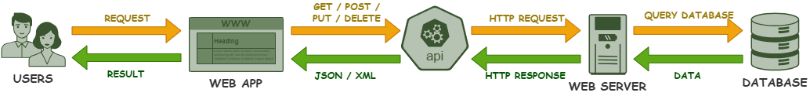

CREACIÓN DE APIs REST EN PYTHON
¿QUÉ ES UNA API?
Una API (Interfaz de Programación de Aplicaciones) es un conjunto de reglas y protocolos que permiten el intercambio de datos entre dos sistemas informáticos, de una manera segura y estandarizada.
Es decir, actúa como un intermediario que define la forma en que una aplicación puede solicitar, recibir y enviar información a otra.
Su principal utilidad es simplificar el desarrollo de aplicaciones, ya que permiten reutilizar código e integrar servicios existentes con facilidad, sin necesidad de crear todo desde cero.

CARACTERÍSTICAS DE UNA API REST
Una API REST (Representational State Transfer) sigue un conjunto de principios arquitectónicos que permiten comunicar sistemas usando peticiones HTTP estándar como GET, POST, PUT, DELETE.
CLIENTE-SERVIDOR
SIN ESTADOS
ACCESO URL
En REST, todo recurso de la aplicación debe estar representado por una URL única, mediante la que podremos acceder a él.
Es decir, para comunicarnos con una API usaremos un navegador web, donde introduciendo diferentes URL, podremos acceder a los distintos recursos que nos proporciona. El formato correcto y las partes que debemos diferenciar en cualquier URL son:
- Protocolo: el protocolo de comunicaciones web por excelencia es
http://ohttps://. - Dominio: nombre del host en el que está alojada la API. Por ejemplo,
www.eltiempo.es. - Endpoint: ubicación lógica específica a la que se envía la solicitud. Por ejemplo,
/Toledo. -
Parámetros: etiquetas con valores que podemos usar para consultar datos concretos dentro de un endpoint. Por ejemplo,
?hora=15:00. Si hay varios parametros, deben ir separados por el símbolo&.
Además, HTTP proporciona diferentes métodos, que nos permiten especificar la acción queremos realizar sobre un recurso:
- GET: para obtener datos.
- POST: para crear datos.
- PUT: para actualizar datos.
- DELETE: para eliminar datos.
FORMATO JSON
PRINCIPALES FRAMEWORKS PYTHON PARA APIs
Al crear aplicaciones web en Python, hay tres opciones de frameworks que destacan sobre el resto: Django, Flask y FastAPI. Cada uno aporta fortalezas, limitaciones y contextos de uso distintos, como vemos en la siguiente tabla:

| CARACTERÍSTICAS | DJANGO | FLASK | FASTAPI |
|---|---|---|---|
| Definición | Framework web de alto nivel y full stack, que viene con todas las funciones y componentes necesarios para un uso completo desde el principio. | Microframework ligero y minimalista, de fácil aprendizaje y que apuesta por la flexibilidad. | Framework moderno y de alto rendimiento pensado para construir APIs con validación, y generación de documentación automática. |
| Uso Recomendado | Aplicaciones web grandes con base de datos, panel de administración y varias funcionalidades listas para usar, como un e-commerce, CMS o ERP. | APIs pequeñas o medianas, prototipos y proyectos de aprendizaje donde se busque libertad tecnológica. | REST APIs y microservicios, aplicaciones en tiempo real como chat o IoT y despliegue de modelos de machine learning e IA cuando el rendimiento es crítico. |
| Desventajas | Es más pesado y menos flexible al imponer convenciones y no tan rápido cuando se trata de APIs de alto rendimiento. | Al ser tan ligero, suele ser necesario instalar librerías externas para integrar ciertas funcionalidades, lo que en proyectos grandes puede ser algo tedioso. | Al ser más joven que los dos anteriores, puede que su comunidad no sea tan extensa y no está orientado a aplicaciones monolíticas. |
FastAPI
REQUERIMIENTOS MÍNIMOS
¿QUE ES UVICORN?
Uvicorn es una librería de Python que actúa como servidor web asíncorno (ASGI) de alto rendimiento y se utiliza para ejecutar aplicaciones web y APIs, como las creadas con FastAPI. En caso de que instalemos fastapi y uvicorn por separado, este se usa desde la línea de comandos para levantar un servidor local en nustra máquina y poder probar el funcionamiento de la API.
Por ejemplo, si tu archivo se llama "main.py" y tu API se llama "app", ejecutaríamos: uvicorn main:app --reload.
FastAPI solo puede usarse con Python 3.6 o superior.
Para utilizarlo, comúnmente se solían instalar dos librerías: fastapi y uvicorn. Pero más recientemente se lanzó el paquete fastapi[standard], que incluye FastAPI, Uvicorn y otras dependencias recomendadas.
Por lo tanto, para usarlo, únicamente debemos instalar:
pip install fastapi[standard]
Además, si instalamos esta librería que incluye todo, podemos probar nuestra API ejecutando lo siguiente desde un terminal:
fastapi run main.py --reload
MI PRIMERA API CON FASTAPI
from fastapi import FastAPI
app = FastAPI()
@app.get("/")
def bienvenida():
return {"Hola desde FastAPI!"}
VALIDACIÓN DE DATOS CON PYDANTIC
Cuando trabajamos con APIs, los datos que llegan desde clientes externos no son fiables. Pueden venir incompletos, con tipos incorrectos o con valores que no cumplen las reglas del negocio de la API.
Para resolver este problema de forma automática, FastAPI utiliza Pydantic. Pydantic es una librería Python que permite definir modelos de estructura de datos en clases y además se encarga de verificar los tipos de datos, realizar conversiones automáticas y generar errores detallados si la validación falla. Si entramos más en detalle:
-
Validación automática de datos: verifica los tipos de datos (str, int, float, bool, list, dict, etc.), campos obligatorios, valores por defecto, estructuras complejas (listas, objetos anidados), restricciones (mínimos, máximos, longitudes…). Y si algo no se cumplo devuelve un error 422 con los detalles.
-
Conversión de tipos (“parsing”): convierte automáticamente los valores al tipo esperado, haciendo que la lógica interna siempre reciba tipos correctos. Por ejemplo:
"10" → int(10) "true" → bool(True) "2024-05-10" → datetime.date "12.5" → float(12.5) -
Modelado de estructuras complejas: Cuando los datos contienen objetos dentro de objetos, listas, relaciones… se necesita una estructura clara y tipada. FastAPI entiende este modelo, valida la anidación y genera documentación automática. Por ejemplo:
from pydantic import BaseModel class Direccion(BaseModel): calle: str ciudad: str class Usuario(BaseModel): nombre: str edad: int direccion: Direccion -
Documentación automática: a través de los modelos Pydantic, FastAPI genera automáticamente documentación interactiva, esquemas OpenAPI y ejemplos de entrada/salida. De modo que cualquier cliente entienda exactamente como utilizar la API. Además mediante las siguientes funcionalidades podemos probar la API sin escribir código adicional:
- Swagger UI →
/docs - ReDoc →
/redoc
- Swagger UI →
-
Consistencia de entrada y salida: los modelos pueden usarse tanto para recibir datos (request) como para devolverlos (response). Evitando inconsistencias en nuestra API:
- Entrada → valida lo que envía el cliente
- Salida → define claramente qué devuelve tu API